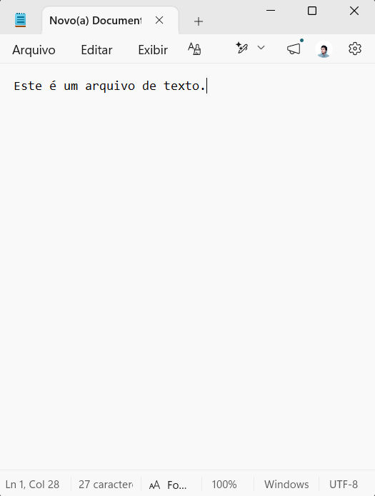
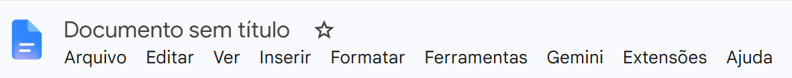
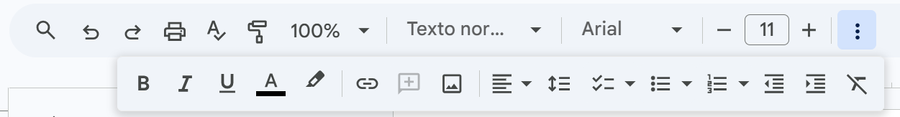
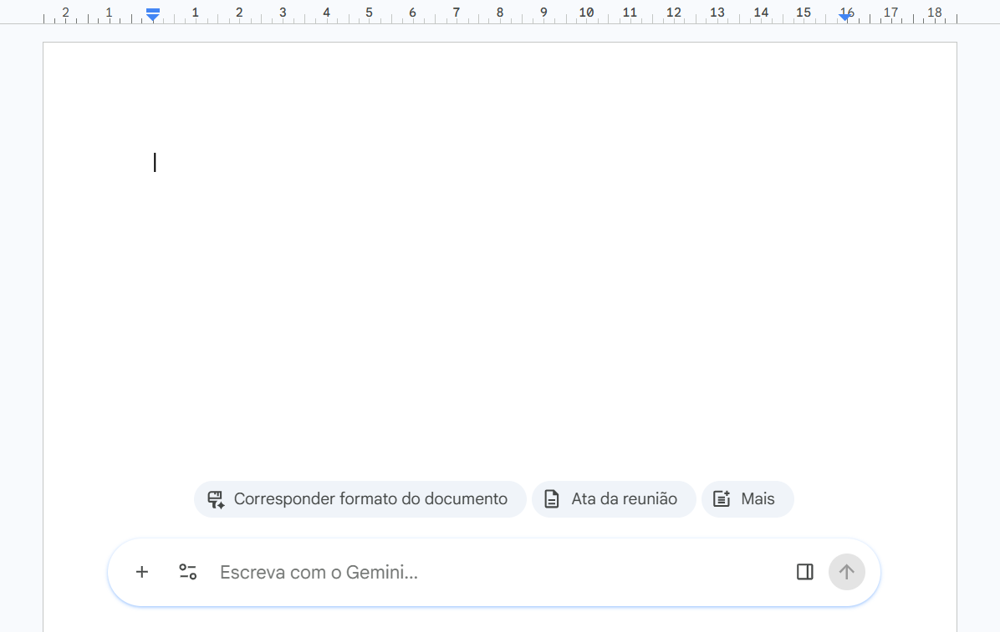
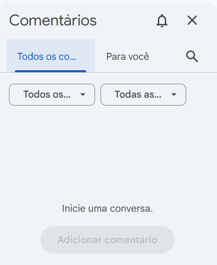
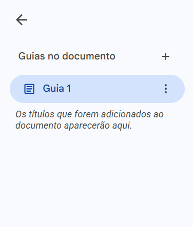

Formatos de Arquivo: Texto, CSV, Markdown, HTML, Google Docs e OpenOffice
Como diferentes aplicativos armazenam e organizam informação
Introdução
Todo programa que usamos no dia a dia — um editor de texto, uma planilha, um navegador — precisa gravar e ler informações em algum formato. Nesta aula vamos conhecer alguns formatos e ferramentas muito comuns: o arquivo de texto puro, o formato CSV (usado para tabelas), o Markdown (usado para formatar texto de forma simples), a linguagem HTML (usada para páginas web), o Google Docs, um editor de texto online, e o OpenOffice, um pacote de escritório gratuito. Apesar de parecerem assuntos distintos, todos eles compartilham uma mesma base: texto simples, organizado de formas diferentes para atender a necessidades diferentes.
1. Arquivos de texto
Por serem simples e legíveis por praticamente qualquer programa, arquivos de texto são usados para os mais variados fins: desde um bilhete rápido até o código-fonte de um sistema inteiro.

1.1 Tipos de arquivo de texto
Embora todos guardem apenas texto, diferentes tipos de arquivo de texto organizam esse conteúdo de formas diferentes, cada um pensado para um uso específico:
- Texto puro (plain text) — apenas caracteres, sem nenhuma formatação especial. Extensão típica:
.txt. - Arquivo separado por vírgulas (CSV) — texto organizado em linhas e colunas, separadas por vírgulas, para representar tabelas. Veremos em detalhe na próxima seção.
- Arquivo HTML — texto com marcações (tags) que descrevem a estrutura de uma página web. Também será visto adiante.
- Doc e Docx — formatos de documentos de processadores de texto (como o Word), que guardam, além do texto, formatação, imagens e estilos.
- Markdown — texto simples com uma sintaxe leve de formatação (como
**negrito**ou#para títulos), muito usado em documentação de software. - Código-fonte — arquivos de texto escritos em uma linguagem de programação, como Python (
.py) ou C++ (.cpp).
1.2 Extensões mais comuns
| Extensão | Tipo de conteúdo |
|---|---|
.txt | Texto puro, sem formatação |
.md | Texto em Markdown |
.csv | Dados tabulares separados por vírgula |
.docx | Documento do Microsoft Word |
.html | Página web (HTML) |
.py | Código-fonte em Python |
.cpp | Código-fonte em C++ |
1.3 Como abrir
Um arquivo de texto puro pode ser aberto por praticamente qualquer editor de texto simples:
- Windows — Bloco de Notas (Notepad).
- macOS — aplicativo TextEdit.
- Ubuntu — aplicativo Gedit.
2. CSV (Comma Separated Values)
Por exemplo, uma pequena tabela com notas de alunos poderia ser representada, em CSV, da seguinte forma:
Nome,Nota,Turma
Ana,8.5,101
Bruno,7.0,102
Carla,9.2,101
Diego,6.5,102Quando esse arquivo é aberto em um programa de planilhas, ele é exibido como uma tabela comum:
| Nome | Nota | Turma |
|---|---|---|
| Ana | 8.5 | 101 |
| Bruno | 7.0 | 102 |
| Carla | 9.2 | 101 |
| Diego | 6.5 | 102 |
2.1 Características do CSV
- Os campos de cada linha são separados por vírgula (em alguns países, por ponto e vírgula, já que a vírgula é usada como separador decimal).
- Cada linha do arquivo corresponde a um registro (uma linha da tabela).
- Campos que contêm vírgulas, quebras de linha ou aspas geralmente precisam ser colocados entre aspas duplas.
- Espaços em branco extras podem ser interpretados como parte do valor, dependendo do programa que lê o arquivo.
- Não existe um "tipo" declarado para cada coluna — tudo é armazenado como texto, cabendo ao programa que lê o arquivo interpretar números, datas, etc.
2.2 Vantagens e desvantagens
| Vantagens | Desvantagens |
|---|---|
| Formato leve e rápido de processar | Não distingue tipos de dado (número, texto, data) |
| Fácil de criar e editar, até manualmente | Não representa bem dados complexos ou aninhados |
| Suportado por praticamente todo software de planilha e banco de dados | Caracteres especiais (vírgula, aspas) podem causar erros de leitura |
| Estrutura simples e padronizada | Não é adequado para armazenar dados binários (imagens, áudio) |
| Arquivos compactos, ocupando pouco espaço | — |
3. Markdown básico
.md ou .markdown, e pode ser convertido para HTML, PDF e outros formatos por um programa chamado processador (ou parser) de Markdown.
Por ser simples de escrever e de ler mesmo sem conversão, o Markdown é muito usado em plataformas como GitHub, Bitbucket e StackOverflow para formatar textos, documentações e mensagens.
3.1 Vantagens do Markdown
- Não é uma linguagem exclusiva para programadores: também é usada para escrever e-books.
- Pode ser convertido para diversos formatos, como PDF, HTML e documentos de texto.
- Permite formatar até mesmo e-mails, com ferramentas como o MarkdownHere.
- É amplamente usado para escrever páginas formatadas em plataformas como StackOverflow e GitHub.
- Arquivos Markdown podem ser transformados em páginas web, com ferramentas como o GitHub Pages.
3.2 Títulos e ênfase
Os títulos são criados com o símbolo # no início da linha — quanto mais símbolos, menor o nível do título:
# Título 1
## Título 2
### Título 3
#### Título 4Negrito e itálico são indicados usando asteriscos ou sublinhados ao redor do texto:
*Isto fica em itálico*
_Isto também fica em itálico_
**Isto fica em negrito**
__Isto também fica em negrito__3.3 Listas
Listas numeradas usam números seguidos de ponto; listas sem numeração podem usar hífen ou asterisco. Também é possível criar sublistas, indentando os itens:
1. Primeiro item
2. Segundo item
3. Terceiro item
- Item A
- Item B
- Subitem de B
- Outro subitem3.4 Links, imagens, código e citações
Links e imagens usam uma sintaxe parecida, com colchetes e parênteses — a única diferença é o ponto de exclamação antes dos colchetes, usado para imagens:
[Texto do link](https://patricialucas.github.io/SwAppSo/)
Trechos de código podem aparecer no meio do texto (código em linha) ou em blocos separados; citações são marcadas com o símbolo > no início da linha:
Aqui vai um trecho de código em linha: `print("olá")`.
```
Este é um bloco de código,
que pode ter várias linhas.
```
> Isto é uma citação.
> Pode ocupar mais de uma linha.README.md, tão comum em repositórios de código no GitHub, é justamente um arquivo escrito em Markdown — por isso ele aparece formatado (com títulos, listas e links) quando visualizado no site, mesmo sendo, na essência, um simples arquivo de texto.
4. HTML básico
4.1 Estrutura básica de um documento
Todo documento HTML segue um esqueleto parecido, com quatro partes principais: a declaração de tipo de documento, e as tags <html>, <head> e <body>.
<!DOCTYPE html>
<html>
<head>
<title>Minha primeira página</title>
</head>
<body>
<p>Olá, mundo!</p>
</body>
</html>| Tag | Função |
|---|---|
<html> | Elemento raiz, que envolve todo o documento. |
<head> | Contém metadados da página: título, links para estilos, configurações — não é exibido na tela. |
<title> | Define o título exibido na aba do navegador. |
<body> | Contém todo o conteúdo visível da página. |
4.2 Títulos, parágrafos e linha horizontal
O HTML define seis níveis de título, de <h1> (o mais importante e maior) até <h6> (o menos importante e menor):
<h1>Título principal</h1>
<h2>Subtítulo</h2>
<h3>Um título menor</h3>Parágrafos são delimitados pela tag <p>; já a tag <br> insere apenas uma quebra de linha, sem iniciar um novo parágrafo:
<p>Esta é a primeira linha.<br>
Esta continua no mesmo parágrafo, em outra linha.</p>A tag <hr> ("horizontal rule") desenha uma linha horizontal, geralmente usada para separar visualmente seções de conteúdo.
4.3 Comentários e imagens
Comentários em HTML não são exibidos pelo navegador — servem apenas para anotações do próprio programador. São escritos entre <!-- e -->:
<!-- Isto é um comentário de uma linha -->
<!--
Isto é um comentário
de várias linhas
-->Imagens são inseridas com a tag <img>, que não tem tag de fechamento e usa o atributo src para indicar o caminho do arquivo:
<img src="foto.jpg" alt="Descrição da imagem">5. Google Docs
5.1 Principais funcionalidades
- Colaboração em tempo real — várias pessoas podem editar o mesmo documento ao mesmo tempo, vendo as alterações umas das outras instantaneamente.
- Armazenamento em nuvem e salvamento automático — o documento fica salvo no Google Drive, sem precisar clicar em "Salvar".
- Modo offline — é possível continuar editando mesmo sem conexão à internet, sincronizando depois.
- Modelos (templates) — modelos prontos para currículos, relatórios, cartas, entre outros.
- Histórico de versões — permite ver e restaurar versões anteriores do documento.
- Complementos e integrações — extensões que adicionam funções extras ao editor.
- Compartilhamento e permissões — controle de quem pode visualizar, comentar ou editar o documento.
- Digitação por voz — permite ditar o texto em vez de digitá-lo.
5.2 Interface
A tela do Google Docs é dividida em algumas áreas principais:





5.3 Menus
| Menu | O que contém |
|---|---|
| Arquivo (File) | Criar, salvar, baixar, imprimir e ver o histórico de versões do documento. |
| Editar (Edit) | Desfazer, refazer, recortar, copiar, colar, localizar e substituir. |
| Ver (View) | Modos de exibição, réguas, linhas de grade e esboço do documento. |
| Inserir (Insert) | Imagens, tabelas, gráficos, cabeçalhos, rodapés e links. |
| Formatar (Format) | Estilo do texto, parágrafos, alinhamento e listas. |
| Ferramentas (Tools) | Verificação ortográfica, contagem de palavras, digitação por voz e Explorar. |
| Extensões (Extensions) | Instalação e gerenciamento de complementos. |
| Ajuda (Help) | Central de ajuda, atalhos de teclado e treinamento. |
6. OpenOffice
Segundo o próprio site do projeto, três motivos resumem por que escolher o OpenOffice:
- Bom software — resultado de mais de vinte anos de desenvolvimento, com design consistente entre suas ferramentas e um processo aberto, em que a própria comunidade de usuários relata problemas e sugere melhorias.
- Fácil de usar — interface familiar para quem já usa outros pacotes de escritório, com suporte de comunidades em diversos idiomas e boa compatibilidade com arquivos de outros programas.
- Totalmente gratuito — pode ser baixado, instalado e usado sem nenhum custo de licença, sob a licença Apache 2.0, para uso pessoal, comercial, educacional ou governamental, sem limite de instalações.
Os documentos criados no OpenOffice são salvos em um formato aberto e padronizado internacionalmente, mas o programa também consegue abrir e salvar arquivos em formatos usados por outros pacotes de escritório, como o .docx do Microsoft Word.
O editor de texto do pacote se chama Writer. Assim como o Microsoft Word, ele permite criar desde um simples bilhete até documentos longos e complexos, como livros com índice e diagramas, contando com verificação ortográfica automática, ferramentas de estilo e formatação, e a possibilidade de exportar o documento para outros formatos, como .docx, HTML e PDF.